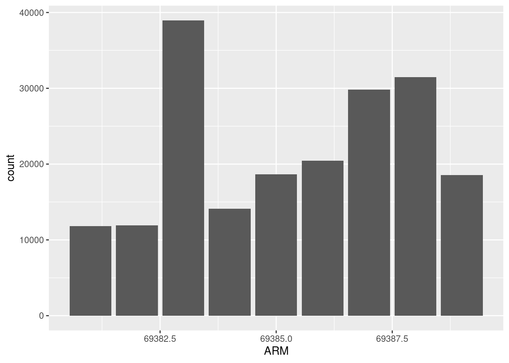
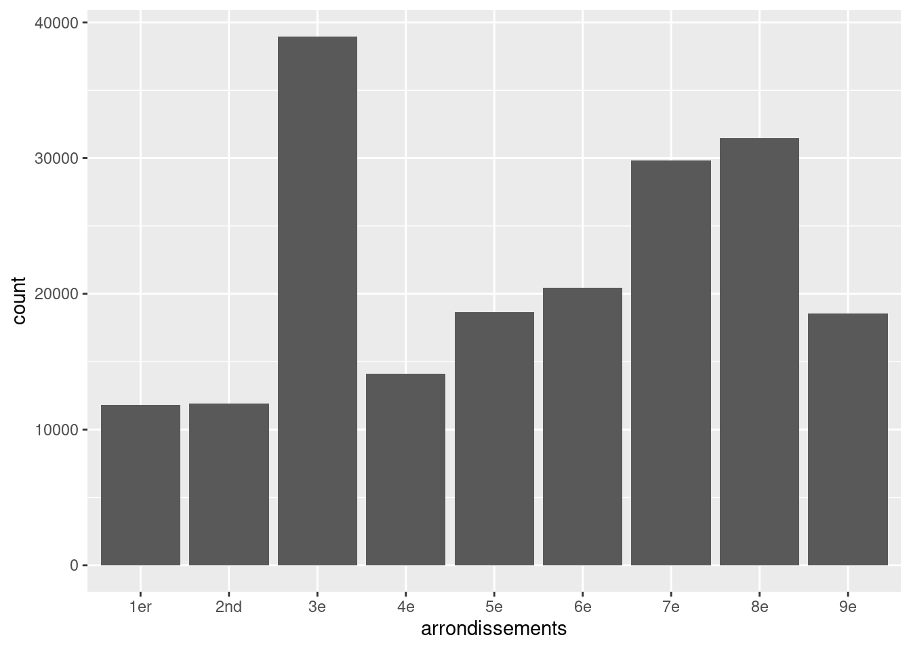
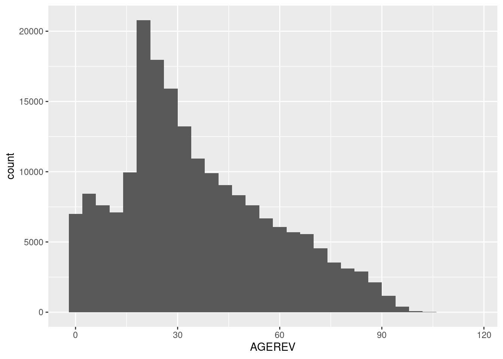
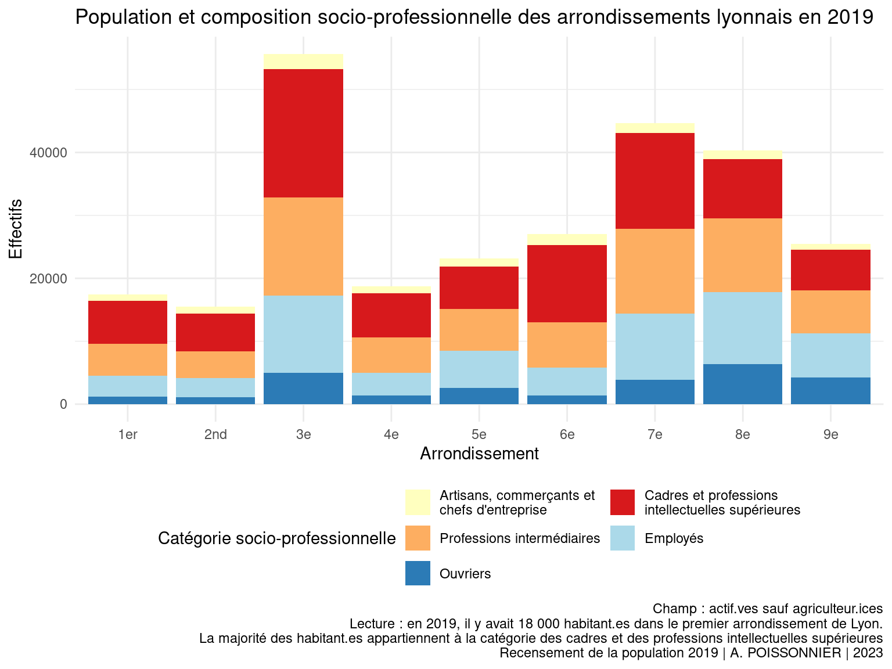
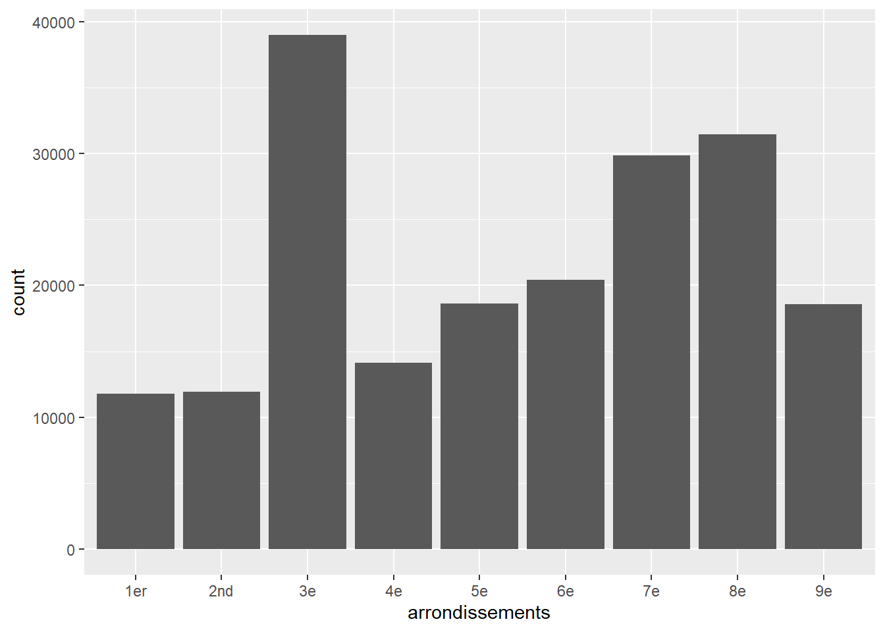
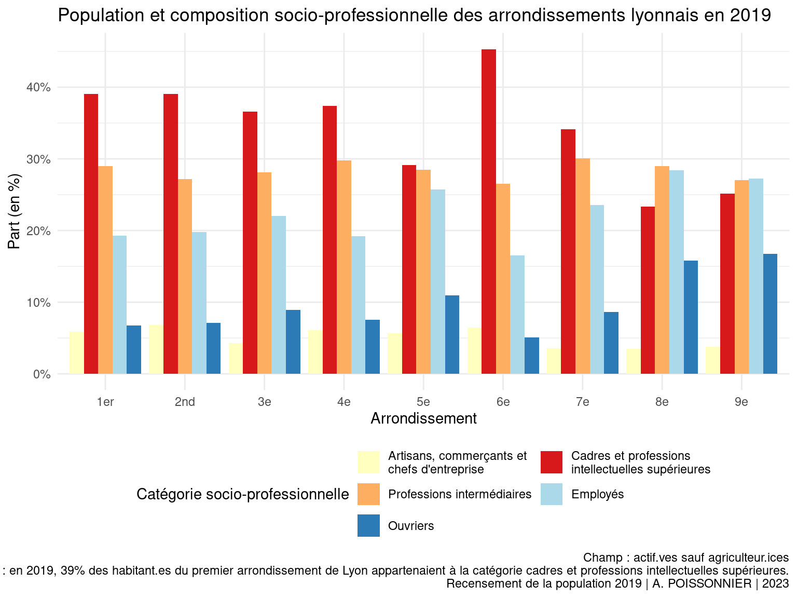
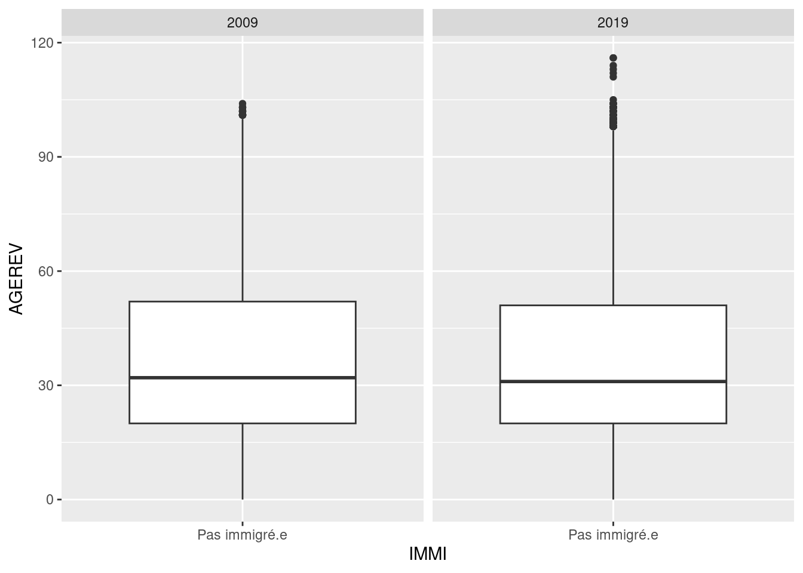
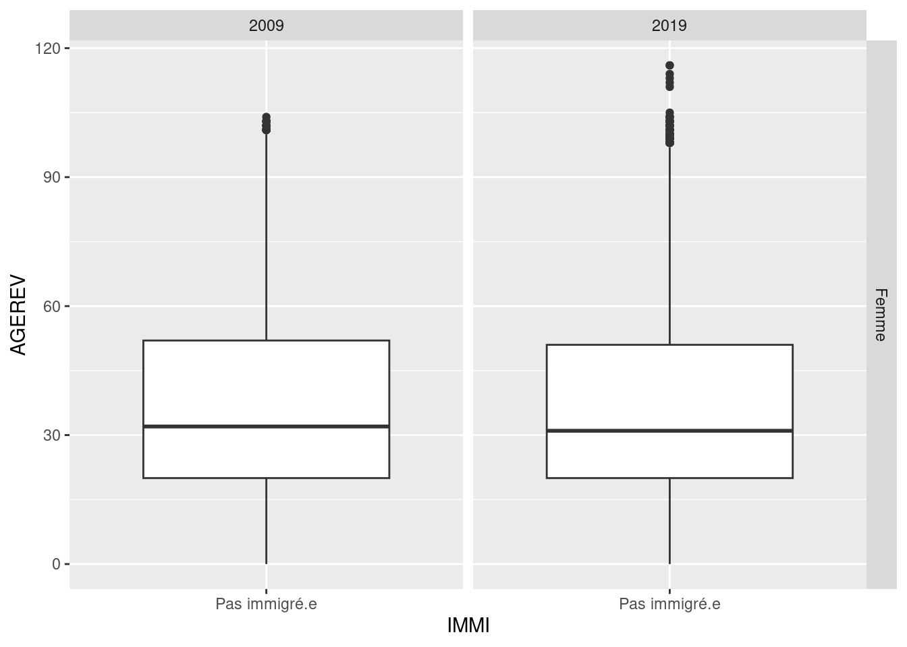
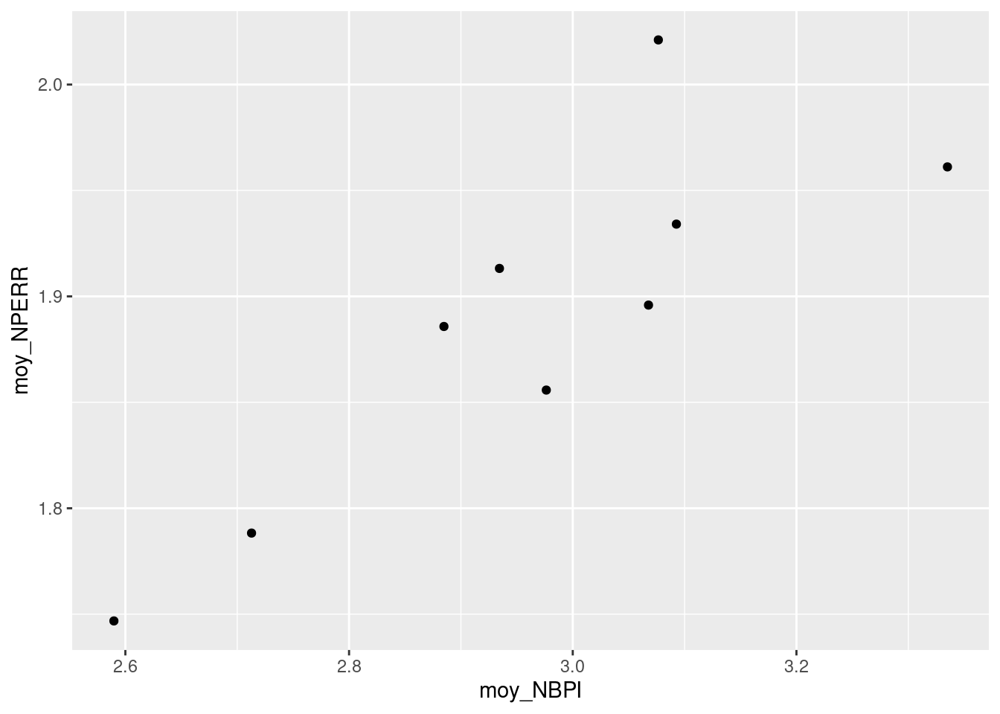

Acquis des premières et deuxièmes séances, programme du jour
La première séance a introduit le langage de programmation R et l’interface RStudio. La deuxième séance a introduit l’univers tidyverse à l’aide de l’exemple du cours au collège de France de François Héran.
L’objectif est de devenir capable de transformer un tableau de données pour passer de l’information brute à l’analyse de données. La méthode présentée dans ce cours consiste à décomposer et enchaîner les opérations nécessaires à la production de statistiques et de graphiques. Elle demande un temps d’apprentissage plus long que les fonctions synthétiques. Une fois les bases acquises, vous aurez néanmoins la possibilité d’adapter facilement votre code aux traitements statistiques qui vous intéressent.
Cette troisième séance reviendra d’abord sur la production de tri à plats et de tri croisés puis sur la visualisation des données.
Tris à plat et tris croisés : compter les unités
Réaliser un tri à plat ou un tri croisé consiste simplement à compter les individus qui appartiennent à des catégories plus ou moins spécifiques. Le tri à plat compte sur une dimension : le nombre d’hommes et le nombre de femmes. Le tri croisé ajoute une ou plusieurs dimensions : le nombre d’hommes agriculteurs et le nombre de femmes agricultrices. Rappel : La fonction count compte la variable donnée. Indiquer plusieurs variables revient à faire un tri croisé, soit compter des effectifs dans des catégories toujours plus précises. L’argument wt = permet d’indiquer les poids des individus.
Reprenons l’exemple du recensement de la population lyonnaise en 2009 et 2019.
# Regardons à nouveau la structure de l'extrait du recensementstr(rp)
On peut obtenir des pourcentages en divisant la population dans la sous-catégorie par la population totale. On utilise la fonction mutate pour créer une nouvelle variable. On l’associe à la fonction sum pour calculer la populaton totale.
Complétez ce code pour calculer la part de chaque arrondissement dans la population lyonnaise en 2019
rp %>%count(ARM, wt = IPONDI) %>%mutate(p = n/sum(n))
La définition de la population totale dépend du type de pourcentage que vous voulez calculer. Il faudra modifier en conséquence votre code pour que la fonction sum n’additionne pas toutes les lignes du tableau !
Par exemple :
Au numérateur, le nombre de femmes habitant dans le 1er arrondissement de Lyon en 2019.
Au dénominateur
Le nombre d’habitant.es dans le 1er arrondissement de Lyon en 2019. On obtient la part femmes dans l’arrondissement.
Il faudra faire la somme de la population au sein de chaque arrondissement à une année donnée, soit indiquer group_by(annee, ARM)
Le nombre d’habitant.es à Lyon en 2019. On obtient la part que représentent les femmes du 1er arrondissement dans la population lyonnaise.
Il faudra faire la somme de la population pour chaque année uniquement, soit indiquer group_by(annee)
# Quelle est la part de femmes dans le premier arrondissement lyonnais en 2019 ?rp %>%count(annee, ARM, SEXE, wt = IPONDI) %>%group_by(annee, ARM) %>%mutate(p = n/sum(n)) %>%ungroup() %>%filter(annee ==2019& ARM ==69381& SEXE ==2)
# A tibble: 1 × 5
annee ARM SEXE n p
<fct> <int> <fct> <dbl> <dbl>
1 2019 69381 2 15115. 0.510
# Il y a 51,0% de femmes dans le 1er arrondissement en 2019.# Quelle part représentent les femmes du premier arrondissement parmi la population lyonnaise en 2019 ?rp %>%count(annee, ARM, SEXE, wt = IPONDI) %>%group_by(annee) %>%mutate(p = n/sum(n)) %>%ungroup() %>%filter(annee ==2019& ARM ==69381& SEXE ==2)
# A tibble: 1 × 5
annee ARM SEXE n p
<fct> <int> <fct> <dbl> <dbl>
1 2019 69381 2 15115. 0.0289
# Les femmes du 1er arrondissement représentent 2,9% de la population lyonnaise en 2019.
La mise en forme des tableaux
Changer le format d’un tableau
Les tableaux obtenus deviennent rapidement trop longs pour être lisibles. La présentation habituelle des tableaux croisés consiste à indiquer les modalités de la variable 1 en ligne et les modalités de la variable 2 en colonnes. C’est la fonction pivot_wider qui permet de transformer un tableau long en un tableau large.
# La part d'hommes et de femmes par arrondissement en 2019## Code pour obtenir le tableau sous format longrp %>%count(annee, ARM, SEXE, wt = IPONDI) %>%group_by(annee, ARM) %>%mutate(p = n/sum(n)) %>%ungroup() %>%filter(annee ==2019) %>%select(-annee, -n) # On enlève la colonne des effectifs pour ne garder que les pourcentages
## Il faut rajouter une fonction pour l'élargir### Ici en mettant le sexe en colonne et l'arrondissement en lignerp %>%count(annee, ARM, SEXE, wt = IPONDI) %>%group_by(annee, ARM) %>%mutate(p = n/sum(n)) %>%ungroup() %>%filter(annee ==2019) %>%select(-annee, -n) %>%pivot_wider(names_from = SEXE, # La variable qui donnera leur nom aux colonnes du tableau élargivalues_from = p # La variable qui donnera les valeurs à mettre dans les colonnes )
### Là en mettant l'arrondissement en colonne et le sexe en ligne## Ce n'est pas la présentation habituelle car on regarde la proportion d'hommes et de femmes## Mais ce format est parfois nécessaire pour que les tableaux rentrent dans le document finalrp %>%count(annee, ARM, SEXE, wt = IPONDI) %>%group_by(annee, ARM) %>%mutate(p = n/sum(n)) %>%ungroup() %>%filter(annee ==2019) %>%select(-annee, -n) %>%pivot_wider(names_from = ARM, # La variable qui donnera leur nom aux colonnes du tableau élargivalues_from = p # La variable qui donnera les valeurs à mettre dans les colonnes )
La mise en forme des tableaux sur R et leur exportation demande de nombreuses étapes supplémentaires. Le plus simple pour vous pourrait être de construire votre tableau en recopiant à la main les valeurs sans faire d’erreurs, ou bien utiliser la fonction View() et copier coller les valeurs dans un logiciel de traitement de texte (Word ou Libre Office Writer) ou un tableur (Excel ou Libre Office Calc). N’oubliez pas d’ajouter les parts dans l’ensemble de la population pour comparer.
tab <- rp %>%count(annee, ARM, SEXE, wt = IPONDI) %>%group_by(annee, ARM) %>%mutate(p = n/sum(n)) %>%ungroup() %>%filter(annee ==2019) %>%select(-annee, -n) %>%pivot_wider(names_from = SEXE,values_from = p )# View(tab)## Je calcule les parts dans l'ensemble de la population, soit juste la part d'hommes et la part de femmes dans la population lyonnaise en 2019.rp %>%count(annee, SEXE, wt = IPONDI) %>%# Ici j'ai enlevé le croisement avec les arrondissements pour le compte des effectifsgroup_by(annee) %>%# Je calcule les parts sans le croisement avec les arrondissementsmutate(p = n/sum(n)) %>%ungroup() %>%filter(annee ==2019) %>%select(-annee, -n)
# A tibble: 2 × 2
SEXE p
<fct> <dbl>
1 1 0.470
2 2 0.530
La visualisation de données avec ggplot2 - La logique additive
La logique additive - Les variable catégorielles
Le package ggplot2 permet de faire l’essentiel de la représentation graphique des données. Il a l’avantage de fonctionner selon une logique proche à l’enchaînement des opérations du l’univers tidyverse, sauf qu’il additionne des couches avec l’opérateur + quand les verbes de dplyr enchaînaient des fonctions avec l’opérateur %>%.
La fonction ggplot permet de déclarer les données sur lesquelles on va travailler.
Les fonctions de la forme geom_ permettent de produire des graphiques. On indique les variables à utiliser à l’intérieur de la fonction aes().
D’autres fonctions permettent de paramétrer le graphique, ajouter des légendes et d’autres modifications.
# Créons un tableau avec les seules données du RP de 2019rp19 <-filter(rp, annee ==2019)# Créons un diagramme en bâtons de la population des arrondissements lyonnaisggplot(rp19) +geom_bar(aes(x = ARM))

Cohérence entre les données, le type de graphique et le code
Le graphique ci-dessus est un exemple très commun des problèmes qui émergent quand on ne s’assure pas de la cohérence entre les données dont on dispose, le type de graphique qu’on construit et le code qu’on écrit. Il faut toujours régler les problèmes au fur et à mesure, c’est la seule façon d’isoler les problèmes et de les régler efficacement.
class(rp19$ARM)
[1] "integer"
# Les arrondissements sont considérés comme des valeurs numériques.# Il faut les convertir en facteurs. Profitons-en pour recoder.rp19 <- rp19 %>%mutate(arrondissements =fct(case_when( ARM ==69381~"1er", ARM ==69382~"2nd", ARM ==69383~"3e", ARM ==69384~"4e", ARM ==69385~"5e", ARM ==69386~"6e", ARM ==69387~"7e", ARM ==69388~"8e", ARM ==69389~"9e" ),levels =c("1er","2nd","3e","4e","5e","6e","7e","8e","9e") ) )# On vérifie notre recodagelevels(rp19$arrondissements)
# Le graphique actualiséggplot(rp19) +geom_bar(aes(x = arrondissements))

Sachant que la fonction pour représenter des histogrammes (pour les variables quantitatives) est geom_histogram et que la variable de l’âge des individus rencensés est AGEREV, vérifiez que la variable d’âge est de la bonne classe d’objet et construisez un histogramme qui représente la distribution des âges.
class(rp19$AGEREV)
[1] "integer"
ggplot(rp19) +geom_histogram(aes(x = AGEREV))
`stat_bin()` using `bins = 30`. Pick better value with `binwidth`.

Distinguer les paramètres liés aux variables et les paramètres indépendants
Il faut bien distinguer deux types de commandes données aux fonctions geom_. Celles à l’intérieur de aes vont interroger les données pour produire quelque chose : compter les effectifs des modalités d’une variable, différencier la coulour ou la forme des points selon les modalités d’une variable etc. Les arguments à l’extérieur de aes s’appliquent uniformément à tous les éléments du graphique.
Avant de le montrer en graphique, recodez la variable SEXE en facteur. La valeur 1 correspond aux hommes et 2 aux femmes. Faites en sorte que la modalité “Femme” soit la première modalité du nouveau facteur plutôt que l’inverse.
Les variables catégorielles à plus de deux modalités
Représentez la population de chaque arrondissement et sa composition socio-professionnelle en excluant les agriculteur.ices, les retraité.es et les inacti.f.ves.
Il faut ensuite ajouter tous les éléments nécessaires à la bonne lecture d’un graphique. On choisit des couleurs à l’aide du site ColorBrewer.
# Je créer un vecteur nommé, c'est-à-dire que je donne un nom à chacune des valeurs.couleurs_csp <-c("Artisans, commerçants et chefs d'entreprise"="#ffffbf","Cadres et professions intellectuelles supérieures"="#d7191c","Professions intermédiaires"="#fdae61","Employés"="#abd9e9","Ouvriers"="#2c7bb6")# Je construis mon graphique en filtrant d'abord les donnéesgraph <-filter(rp19, !(csp %in%c("Agriculteurs exploitants", "Retraités","Inactifs"))) %>%ggplot() +geom_bar(aes(x = arrondissements,fill = csp,weight = IPONDI))graph +# Je rajoute les légendeslabs( # Fonction qui permet de définir les titres et textestitle ="Population et composition socio-professionnelle des arrondissements lyonnais en 2019",x ="Arrondissement",y ="Effectifs",fill ="Catégorie socio-professionnelle",caption ="Champ : actif.ves sauf agriculteur.ices Lecture : en 2019, il y avait 18 000 habitant.es dans le premier arrondissement de Lyon. La majorité des habitant.es appartiennent à la catégorie des cadres et des professions intellectuelles supérieures Recensement de la population 2019 | A. POISSONNIER | 2023") +# Je change les couleurs et le thème graphiquescale_fill_manual(values = couleurs_csp,labels = scales::label_wrap(30)) +theme_minimal() +theme(legend.position ="bottom") +guides(fill =guide_legend(nrow =3,byrow = T))

La visualisation de données avec ggplot2 - Choisir la représentation adéquate
Changer la position des barres superposées
La lisibilité d’un graphique et le risque qu’il amène des erreurs d’interprétation est très différent selon la façon dont on représente l’information.
# Je créer un vecteur nommé, c'est-à-dire que je donne un nom à chacune des valeurs.couleurs_csp <-c("Artisans, commerçants et chefs d'entreprise"="#ffffbf","Cadres et professions intellectuelles supérieures"="#d7191c","Professions intermédiaires"="#fdae61","Employés"="#abd9e9","Ouvriers"="#2c7bb6")# Je construis mon graphique en filtrant d'abord les donnéesgraph <-filter(rp19, !(csp %in%c("Agriculteurs exploitants", "Retraités","Inactifs"))) %>%ggplot() +geom_bar(aes(x = arrondissements,fill = csp,weight = IPONDI),position ="dodge")# Je rajoute les légendesgraph +labs( # Fonction qui permet de définir les titres et textestitle ="Population et composition socio-professionnelle des arrondissements lyonnais en 2019",x ="Arrondissement",y ="Effectifs",fill ="Catégorie socio-professionnelle",caption ="Champ : actif.ves sauf agriculteur.ices Lecture : en 2019, il y avait 18 000 habitant.es dans le premier arrondissement de Lyon. La majorité des habitant.es appartiennent à la catégorie des cadres et des professions intellectuelles supérieures Recensement de la population 2019 | A. POISSONNIER | 2023") +# Je change les couleurs et le thème graphiquescale_fill_manual(values = couleurs_csp,labels = scales::label_wrap(30)) +theme_minimal() +theme(legend.position ="bottom") +guides(fill =guide_legend(nrow =3,byrow = T))

Représenter des distributions en pourcentages
# Je créer un vecteur nommé, c'est-à-dire que je donne un nom à chacune des valeurs.couleurs_csp <-c("Artisans, commerçants et chefs d'entreprise"="#ffffbf","Cadres et professions intellectuelles supérieures"="#d7191c","Professions intermédiaires"="#fdae61","Employés"="#abd9e9","Ouvriers"="#2c7bb6")# Je construis mon graphique en filtrant d'abord les donnéesgraph <- rp19 %>%filter(!(csp %in%c("Agriculteurs exploitants", "Retraités","Inactifs"))) %>%count(arrondissements, csp, wt = IPONDI) %>%group_by(arrondissements) %>%mutate(p = n/sum(n)) %>%ggplot() +geom_bar(aes(x = arrondissements,y = p,fill = csp),position ="dodge",stat ="identity")# Je rajoute les légendesgraph +labs( # Fonction qui permet de définir les titres et textestitle ="Population et composition socio-professionnelle des arrondissements lyonnais en 2019",x ="Arrondissement",y ="Part (en %)",fill ="Catégorie socio-professionnelle",caption ="Champ : actif.ves sauf agriculteur.ices Lecture : en 2019, 39% des habitant.es du premier arrondissement de Lyon appartenaient à la catégorie cadres et professions intellectuelles supérieures. Recensement de la population 2019 | A. POISSONNIER | 2023") +# Je change les couleurs et le thème graphiquescale_fill_manual(values = couleurs_csp,labels = scales::label_wrap(30)) +scale_y_continuous(labels = scales::percent) +theme_minimal() +theme(legend.position ="bottom") +guides(fill =guide_legend(nrow =3,byrow = T))

La visualisation de données avec ggplot2 - les variables numériques
Les distributions à l’aide des boîtes à moustache
Créez des boîtes à moustache à l’aide de la fonction geom_boxplot qui représente la distribution de l’âge en fonction de la variable IMMI. N’utilisez pas les poids cette fois-ci.
rp <- rp %>%mutate(arrondissements =fct(case_when( ARM ==69381~"1er", ARM ==69382~"2nd", ARM ==69383~"3e", ARM ==69384~"4e", ARM ==69385~"5e", ARM ==69386~"6e", ARM ==69387~"7e", ARM ==69388~"8e", ARM ==69389~"9e" ),levels =c("1er","2nd","3e","4e","5e","6e","7e","8e","9e") ),csp =fct(case_when( CS1 ==1~"Agriculteurs exploitants", CS1 ==2~"Artisans, commerçants et chefs d'entreprise", CS1 ==3~"Cadres et professions intellectuelles supérieures", CS1 ==4~"Professions intermédiaires", CS1 ==5~"Employés", CS1 ==6~"Ouvriers", CS1 ==7~"Retraités", CS1 ==8~"Inactifs"),levels =c("Agriculteurs exploitants","Artisans, commerçants et chefs d'entreprise","Cadres et professions intellectuelles supérieures","Professions intermédiaires","Employés","Ouvriers","Retraités","Inactifs") ),IMMI =fct(ifelse(IMMI ==1, "Immigré.e", "Pas immigré.e"),levels =c("Pas immigré.e", "Immigré.e")),SEXE =fct(ifelse(SEXE ==1, "Homme", "Femme"),levels =c("Femme", "Homme")) )rp19 <- rp19 %>%mutate(IMMI =fct(ifelse(IMMI ==1, "Immigré.e", "Pas immigré.e"),levels =c("Pas immigré.e", "Immigré.e")),SEXE =fct(ifelse(SEXE ==1, "Homme", "Femme"),levels =c("Femme", "Homme")))
On souhaite parfois réaliser la même opération de visualisation mais le représenter dans des graphiques différents. Cela permet de distinguer les niveaux d’analyse à plus de deux dimensions. Il faut pour cela utiliser les fonctions facet_
# Reproduire la comparaison des âges à 2 recensements mis côte-à-côterp %>%ggplot() +geom_boxplot(aes(y = AGEREV,x = IMMI)) +facet_wrap(vars(annee))

# On peut même créer des grilles avec plus d'un croisementrp %>%ggplot() +geom_boxplot(aes(y = AGEREV,x = IMMI)) +facet_grid(vars(SEXE), vars(annee))

Transformer des données numériques avant de les représenter
Nous avons déjà vu que les verbes de dplyr tel mutate changeaient leur fonctionnement si un groupement avait été annoncé avec group_by. Les variables NBPI et NPERR représentent respectivement le nombre de pièces et le nombre de personnes dans le logement habité par la personne recensée. La variable LPRM prend la valeur 1 quand la personne recensée est la personne de référence du logement. Créez une nouvelle colonne sur le tableau du recensement de 2019 du nombre de pièces et de personnes moyens par arrondissement. La fonction weighted.mean qui prend les arguments x pour le vecteur et w pour les poids vous permettra de tenir compte de la pondération.
rp19 %>%filter(LPRM ==1) %>%group_by(arrondissements) %>%mutate(moy_NBPI =weighted.mean(x= NBPI, w = IPONDI),moy_NPERR =mean(x = NPERR, w = IPONDI))
# A tibble: 104,042 × 14
# Groups: arrondissements [9]
annee ARM IPONDI CS1 IMMI SEXE AGEREV NPERR NBPI LPRM arrondissements
<fct> <int> <dbl> <fct> <fct> <fct> <int> <int> <int> <fct> <fct>
1 2019 69388 1.18 3 Pas … Femme 43 3 3 1 8e
2 2019 69384 2.97 8 Pas … Femme 85 1 4 1 4e
3 2019 69383 0.956 8 Pas … Femme 23 1 1 1 3e
4 2019 69388 1.07 4 Pas … Femme 28 1 1 1 8e
5 2019 69384 2.62 5 Pas … Femme 50 1 2 1 4e
6 2019 69383 3.02 8 Pas … Femme 23 2 1 1 3e
7 2019 69383 2.95 6 Pas … Femme 21 1 3 1 3e
8 2019 69382 2.88 3 Pas … Femme 29 1 2 1 2nd
9 2019 69389 0.941 5 Pas … Femme 48 1 4 1 9e
10 2019 69384 2.79 3 Pas … Femme 38 5 6 1 4e
# ℹ 104,032 more rows
# ℹ 3 more variables: csp <fct>, moy_NBPI <dbl>, moy_NPERR <dbl>
La fonction summarize
La fonction summarize permet de résumer cette information de groupe en un tableau synthétique.
rp19 %>%filter(LPRM ==1) %>%group_by(arrondissements) %>%summarize(moy_NBPI =weighted.mean(x= NBPI, w = IPONDI),moy_NPERR =weighted.mean(x = NPERR, w = IPONDI))
# A tibble: 9 × 3
arrondissements moy_NBPI moy_NPERR
<fct> <dbl> <dbl>
1 1er 2.71 1.79
2 2nd 2.98 1.86
3 3e 2.88 1.89
4 4e 3.09 1.93
5 5e 3.34 1.96
6 6e 3.07 1.90
7 7e 2.59 1.75
8 8e 2.93 1.91
9 9e 3.08 2.02
Représentez graphiquement cette information à l’aide de la fonction geom_point qui crée un nuage de points.
rp19 %>%filter(LPRM =="1") %>%# La personne de référence du ménagegroup_by(arrondissements) %>%summarize(moy_NBPI =weighted.mean(x = NBPI, w = IPONDI),moy_NPERR =weighted.mean(x = NPERR, w = IPONDI)) %>%ggplot() +geom_point(aes(x = moy_NBPI,y = moy_NPERR))

Associez les points dans le plan en deux dimensions au nom des arrondissements en remplaçant geom_point par geom_text.
rp19 %>%filter(LPRM =="1") %>%# La personne de référence du ménagegroup_by(arrondissements) %>%summarize(moy_NBPI =weighted.mean(x = NBPI, w = IPONDI),moy_NPERR =weighted.mean(x = NPERR, w = IPONDI)) %>%ggplot() +geom_text(aes(x = moy_NBPI,y = moy_NPERR,label = arrondissements))